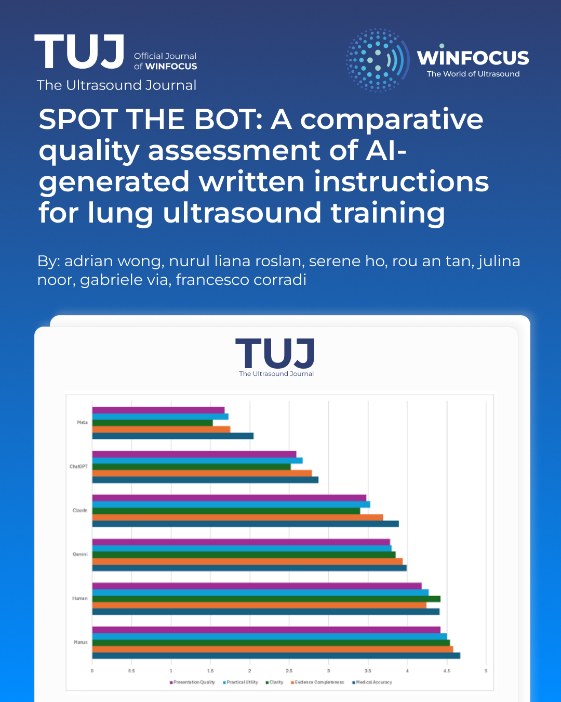

SPOT THE BOT: A comparative quality assessment of AI-generated written instructions for lung ultrasound training
Keywords:
Artificial intelligence (AI), Point-of-care ultrasound (POCUS), Medical education, Lung ultrasound (LUS)Abstract
Background: The rapid proliferation of artificial intelligence (AI) in medical education has outpaced the development of quality assurance methods for AI-generated content. This study provides the first systematic evaluation of AI-generated instructional materials for lung ultrasound (LUS) training.
Methods: The ATLAS study employed a cross-sectional, multi-rater evaluation design comparing six instruction sources (five AI systems and human-generated content) across ten LUS content sessions. Expert evaluators (n=39) assessed materials using five standardized domains: Medical Accuracy, Evidence Completeness, Clarity, Practical Utility, and Pedagogical Quality. Statistical analysis included Kruskal-Wallis tests and pairwise comparisons with Bonferroni correction.
Results: Significant differences existed between instruction sources (H = 92.582, p < 0.001). Manus AI achieved the highest overall rating (4.55±0.83) and significantly outperformed human instructions in Medical Accuracy (p = 0.0002) and Evidence Completeness (p < 0.001). Gemini AI (3.94±0.97) performed statistically equivalent to human instructions (4.23±1.00). ChatGPT (2.62±1.35) and Meta (1.53±1.02) performed significantly worse than human instructions (p < 0.001). Clarity emerged as the most discriminating criterion with the widest performance range (1.53-4.54).
Conclusions: Certain AI systems can generate high-quality LUS instructional materials that match or exceed human-generated content. However, significant quality variations across AI systems emphasize the critical importance of systematic evaluation before implementation. These findings support cautious but optimistic integration of high-performing AI systems into medical education with appropriate quality assurance measures.
References
1. Thirunavukarasu, A. J., Ting, D. S. J., Elangovan, K., Gutierrez, L., Tan, T. F., & Ting, D. S. W. (2023). Large language models in medicine. Nature Medicine, 29, 1930–1940. https://doi.org/10.1038/s41591-023-02448-8
2. Khakpaki, A., et al. (2025). Advancements in artificial intelligence transforming medical teaching. Medical Education Online, 30(1), 45-58.
3. Zhang, K., et al. (2025). Revolutionizing health care: The transformative impact of large language models. JMIR Medical Education, 11(1), e59069. https://doi.org/10.2196/59069
4. Masters, K. (2023). Ethical use of artificial intelligence in health professions education: AMEE Guide No. 158. Medical Teacher, 45(6), 574-584. doi: 10.1080/0142159X.2023.2186203.
5. Sallam, M. (2023). ChatGPT utility in healthcare education, research, and practice: systematic review on the promising perspectives and valid concerns. Healthcare, 11(6), 887. https://doi.org/10.3390/healthcare11060887
6. Rodger D., et al. (2025) Generative AI in healthcare education: How AI literacy gaps could compromise learning and patient safety. Nurse Educ Prac, 87, 104461. doi: 10.1016/j.nepr.2025.104461.
7. Volpicelli, G., et al. (2012). International evidence-based recommendations for point-of-care lung ultrasound. Intensive Care Medicine, 38(4), 577-591. https://doi.org/10.1007/s00134-012-2513-4
8. Pietersen, P. I., Konge, L., & Laursen, C. B. (2018). Lung ultrasound training: a systematic review of published literature in clinical lung ultrasound training. Critical Ultrasound Journal, 10(1), 23. doi: 10.1186/s13089-018-0103-6
9. Johnson, D., et al. (2023). Assessing the accuracy and reliability of AI-generated medical information: The case of ChatGPT. Research square, rs.3.rs-2566942. https://doi.org/10.21203/rs.3.rs-2566942/v1
10. Artino, A. R., La Rochelle, J. S., Dezee, K. J., & Gehlbach, H. (2014). Developing questionnaires for educational research: AMEE Guide No. 87. Medical Teacher, 36(6), 463-474. https://doi.org/10.3109/0142159X.2014.889814
11. Parker, E., et al. (2025). Developing a roadmap for a competency-based point-of-care ultrasound curriculum. Academic Medicine, 27(1), E741.
12. Höhne, E., et al. (2022). Assessment methods in medical ultrasound education: A systematic review. Frontiers in Medicine, 9, 871957. https://doi.org/10.3389/fmed.2022.871957
13. Pearce, J., et al. (2015). The rationale for and use of assessment frameworks: Improving assessment and reporting quality in medical education. Perspectives on Medical Education, 4(3), 110-118. https://doi.org/10.1007/s40037-015-0182-z
14. Cheung, L. (2016). Using an instructional design model to teach medical procedures. Academic Medicine, 26, 175-180.
15. Damewood, S. C., et al. (2019). Tools for measuring clinical ultrasound competency: A systematic review. AEM Educ Train, 30(4Supp1), S106-S112.
16. Sullivan, G. M., & Artino, A. R. (2013). Analysing and interpreting data from Likert-type scales. Journal of Graduate Medical Education, 5(4), 541-542.
17. Faherty, A., et al. (2020). Inter-rater reliability in clinical assessments: Do examiner pairings influence candidate ratings? BMC Medical Education, 20, 147. https://doi.org/10.1186/s12909-020-02009-4
18. Mass General Brigham. (2025). Large language models prioritize helpfulness over accuracy in medical contexts. Press Release. https://www.massgeneralbrigham.org/en/about/newsroom/press-releases/large-language-models-prioritize-helpfulness-over-accuracy-in-medical-contexts
19. Shieh, A., et al. (2024). Assessing ChatGPT 4.0's test performance and clinical knowledge. Scientific Reports, 14, 9330. https://doi.org/10.1038/s41598-024-58760-x
20. Corrado G. and Barral J. (2024). Advancing medical AI with Med-Gemini. Google Research Blog. https://research.google/blog/advancing-medical-ai-with-med-gemini/
21. Halalau, A., et al. (2021). Evidence-based medicine curricula and barriers for implementation: A systematic review. Academic Medicine, 12, 101-124.
22. Bahir, D., et al. (2025). Gemini AI vs. ChatGPT: A comprehensive examination alongside ophthalmology residents in medical knowledge. Graefe's archive for clinical and experimental ophthalmology = Albrecht von Graefes Archiv fur klinische und experimentelle Ophthalmologie, 263(2), 527–536. https://doi.org/10.1007/s00417-024-06625-4
23. Salman, I. M., Ameer, O. Z., Khanfar, M. A., & Hsieh, Y. H. (2025). Artificial intelligence in healthcare education: Evaluating the accuracy of ChatGPT, Copilot, and Google Gemini in cardiovascular pharmacology. Frontiers in Medicine, 12, e1495378. https://doi.org/10.3389/fmed.2025.1495378
24. Pangaro, L. (2014). Frameworks for learner assessment in medicine: AMEE Guide No. 78. Medical Teacher, 35(6), e1197-e1210.
25. Kolcu, G., & Çalişkan, S. A. (2025). Advancing Assessment of Reliability in Clinical Education: A Generalizability Theory Perspective. Journal of medical education and curricular development, 12, 23821205251384832. https://doi.org/10.1177/23821205251384832

Downloads
Additional Files
Published
Issue
Section
License
Copyright (c) 2026 Adrian Wong, Nurul Liana Roslan, Serene Ho, Rou An Tan, Julina Noor, Gabriele Via, Francesco Corradi (Author)

This work is licensed under a Creative Commons Attribution-NonCommercial 4.0 International License.
This is an Open Access article distributed under the terms of the Creative Commons Attribution License (https://creativecommons.org/licenses/by-nc/4.0) which permits unrestricted use, distribution, and reproduction in any medium, provided the original work is properly cited.
Authors retain the copyright for their published work. No formal permission will be required to reproduce parts (tables or illustrations) of published papers, provided the source is quoted appropriately and reproduction has no commercial intent.
How to Cite